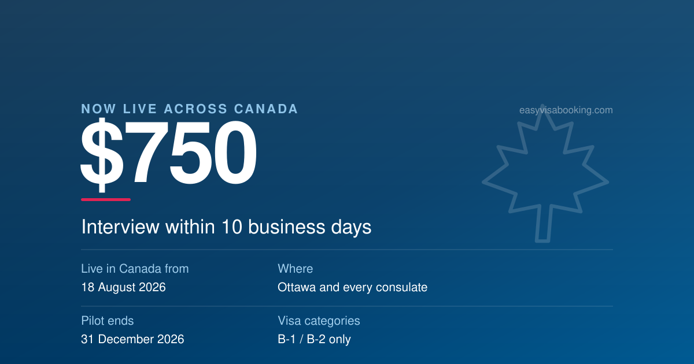

New · live in Canada 18 Aug 2026

Expedite & Emergency
The $750 Paid Expedite Is Now Live in Canada: Who It Actually Helps
On 18 August 2026 Mission Canada became the second mission in the world to switch on the paid lane, and the first with a visitor visa queue measured in years. Twenty-one months in Toronto against ten business days changes the arithmetic, but for a narrower group than the headlines suggest.